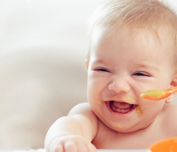

Parenfant


Campagne de sensibilisation à l'alimentation du nouveau-né et du jeune enfant,
Retrouvez-nous dans toutes la France du 5 janvier 2023 au 5 février 2023.
L'alimentation est un pillier essentiel pour le développement de l'enfant, pour sa croissance, pour son développement
moteur et psychologique. L'alimentation permet également à l'enfant d'apprendre les valeurs du partage, de se sociabiliser,la convivialité,
l'échange mais aussi de découvrir des formes, des couleurs, des textures, des goûts différents ce qui permet de travailler son éveil et sa curiosité.